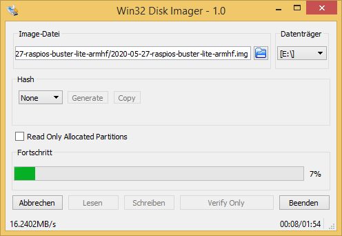
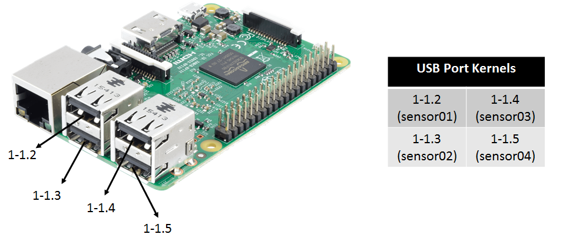

Raspberry Pi for Mobile Robots
This is a tutorial on how to set up your Raspberry Pi for controlling a mobile robot. Therefore, we will use the Robot Operating System (ROS) together with different connection possibilities (e.g. WLAN, Mobile Net, …).
A complete Image with existing ROS installation and WLAN access point can be found here. It has everything installed and configured until including the Enable SPI and UART Connection section.
Table of Contents
Enable SPI and UART Connection
Define static addresses for USB ports
Install Raspberry Pi OS
First, we install Raspberry Pi OS onto the Raspberry Pi. There are different Images available (e.g. desktop, Lite) which can be found here. We will use the Desktop version (Raspberry Pi Os (32 Bit)). The easiest way is to use the Rapsberry Pi Imager to load the image onto your SD card (e.g. 32 GB). Optional you can download the ZIP folder of your chosen Raspberry OS version and load it onto a Micro SD card with your own software, e.g. the Win32 Disk Manager (Windows), which can be found here. Therefore, unpack the downloaded ZIP folder (it contains an .img file of the OS), start the Win32 Disk Manager, choose the .img-file and the right data medium and start writing onto the SD card.

Access the Raspberry Pi
To access the Raspberry Pi for installing required components, we first enable the SSH connection. Therefore, we connect a monitor and a keyboard to the Raspberry Pi, start it and login with the default username and password
username: pi
password: raspberry
To enable SSH connection, we type
sudo raspi-config
navigate to Interfacing Options, then to P2 SSH and enable the SSH server option. Now we can connect via SSH, e.g. using Putty. Therefore, connect the Raspberry Pi to your local network via ethernet. Probably, your Raspberry Pi has to be registered by your system administrator via its MAC address to get a valid IP. Now we can proceed with the further configurations, but first you might want to change your password by typing
passwd
ROS Configuration
To operate our mobile robot we will use the Robot Operating System (ROS). We start by updating and upgrading our system
sudo apt update
sudo apt upgrade
We now check the version of our Raspberry OS
cat /etc/os-release
It will show something similar to
PRETTY_NAME="Raspbian GNU/Linux 10 (buster)"
NAME="Raspbian GNU/Linux"
VERSION_ID="10"
VERSION="10 (buster)"
VERSION_CODENAME=buster
ID=raspbian
ID_LIKE=debian
HOME_URL="http://www.raspbian.org/"
SUPPORT_URL="http://www.raspbian.org/RaspbianForums"
BUG_REPORT_URL="http://www.raspbian.org/RaspbianBugs"
As you can see, our version is “buster”. Hence, we can install the current ROS version Melodic onto our Raspberry Pi. To do so, we will follow ROS Installation Tutorial for the Raspberry Pi. We start by installing the repository key
sudo sh -c 'echo "deb http://packages.ros.org/ros/ubuntu $(lsb_release -sc) main" > /etc/apt/sources.list.d/ros-latest.list'
sudo apt-key adv --keyserver hkp://ha.pool.sks-keyservers.net:80 --recv-key C1CF6E31E6BADE8868B172B4F42ED6FBAB17C654
and updating the system
sudo apt update
sudo apt upgrade
Now, we install the bootstrap dependencies
sudo apt install -y python-rosdep python-rosinstall-generator python-wstool python-rosinstall build-essential cmake
We will proceed by downloading required files and building ROS-Melodic. First, we require a catkin workspace
mkdir -p ~/ros_catkin_ws
cd ~/ros_catkin_ws
to then fetch the core packages (no GUI-tools) and build them
rosinstall_generator ros_comm --rosdistro melodic --deps --wet-only --tar > melodic-ros_comm-wet.rosinstall
wstool init src melodic-ros_comm-wet.rosinstall
We proceed by resolving the dependencies (that should take a while)
rosdep install -y --from-paths src --ignore-src --rosdistro melodic -r --os=debian:buster
sudo rosdep init
rosdep update
Now, after downloading the packages and resolving the dependencies, we can start building ROS by invoking catkin_make_isolated. It might be required that you decrease the compilation thread with the -j1 or -j2 option
sudo ./src/catkin/bin/catkin_make_isolated --install -DCMAKE_BUILD_TYPE=Release --install-space /opt/ros/melodic
Now source the ROS environment and also put it into the ~/.bashrc, such that it get sourced automatically for every bash session
source /opt/ros/melodic/setup.bash
echo "source /opt/ros/melodic/setup.bash" >> ~/.bashrc
ROS is now completely set up. If you require additional packages, follow up this procedure.
WLAN Configuration
In order to be able to access the Raspberry Pi in absence of any local network, we let the Raspberry Pi open a WLAN by itself. We can then easily control and monitor our mobile robot over this network, e.g. by using ROS-Mobile. First, we install required software
sudo apt install dnsmasq hostapd
Add network configuration to the default activated DHCP Client Daemon by opening the config file
sudo nano /etc/dhcpcd.conf
and including
interface wlan0
static ip_address=192.168.1.1/24
by saving the changes with ctrl+o and returning with ctrl+x. As you can see, we assign our WLAN-Interface a static IP, which might be essential for the use as DHCP- or DNS-Server. Now, we restart the DHCP client daemon
sudo systemctl restart dhcpcd
Check if both network interfaces are available with
ip l
It should appear something similar to
1: lo: <LOOPBACK,UP,LOWER_UP> mtu 65536 qdisc noqueue state UNKNOWN mode DEFAULT group default qlen 1000
link/loopback 00:00:00:00:00:00 brd 00:00:00:00:00:00
2: eth0: <BROADCAST,MULTICAST,UP,LOWER_UP> mtu 1500 qdisc pfifo_fast state UP mode DEFAULT group default qlen 1000
link/ether b8:27:eb:44:ba:d4 brd ff:ff:ff:ff:ff:ff
3: wlan0: <BROADCAST,MULTICAST> mtu 1500 qdisc noop state DOWN mode DORMANT group default qlen 1000
link/ether b8:27:eb:11:ef:81 brd ff:ff:ff:ff:ff:ff
Next, we change the configurations for the DHCP-server and the DNS-cache, which both are included in the “dnsmasq” file. We save a copy of the current file as backup and then open the file for adding our configurations
sudo mv /etc/dnsmasq.conf /etc/dnsmasq.conf_alt
sudo nano /etc/dnsmasq.conf
We add the following lines
# DHCP-Server active for wlan0
interface=wlan0
# DHCP-Server non-active for existing network
no-dhcp-interface=eth0
# IPv4-addresses and lease time
dhcp-range=192.168.1.100,192.168.1.200,255.255.255.0,24h
# DNS
dhcp-option=option:dns-server,192.168.1.1
Save and close again with ctrl+o and ctrl+x. Let us now test our configurations
dnsmasq --test -C /etc/dnsmasq.conf
Hopefully, it gives back now an “OK”. Finally, we restart the dnsmasq, checking the status and enabling the autostart mode
sudo systemctl restart dnsmasq
sudo systemctl status dnsmasq
sudo systemctl enable dnsmasq
By checking the status, the service should be “Active”. In the last step, we now configure the “hostapd”. Therefore, we open
sudo nano /etc/hostapd/hostapd.conf
which should be an empty file. We add the following lines
# Interface
interface=wlan0
# WLAN-Configuration
ssid=myRobotWLAN
channel=1
hw_mode=g
ieee80211n=1
ieee80211d=1
country_code=DE
wmm_enabled=1
# WLAN-Encryption
auth_algs=1
wpa=2
wpa_key_mgmt=WPA-PSK
rsn_pairwise=CCMP
wpa_passphrase=12345678
Our WLAN has now the name myRobotWLAN and the password is “12345678”. Since this file holds the WLAN password, we should only allow the user root to get access
sudo chmod 600 /etc/hostapd/hostapd.conf
Lets us now check if the “hostapd” can be successfully put into operation
sudo hostapd -dd /etc/hostapd/hostapd.conf
If successfully, it should not go back to command input and show the following two lines somewhere
wlan0: interface state COUNTRY_UPDATE->ENABLED
wlan0: AP-ENABLED
If it goes back to command input or puts out error message, multiple error sources are possible. One common mistake is that you did not specify the country in which you operate, such that WLAN in general is disabled. Therefore go to
sudo raspi-config
and enable the WLAN. To let the “hostapd” start in the background as daemon we open the default configurations
sudo nano /etc/default/hostapd
and add
RUN_DAEMON=yes
DAEMON_CONF="/etc/hostapd/hostapd.conf"
Finally, we take the “hostapd” in work with
sudo systemctl unmask hostapd
sudo systemctl start hostapd
sudo systemctl enable hostapd
We can check if everything is successful by typing
sudo systemctl status hostapd
where “active” and “loaded” should be stated. We can now access the WLAN “myRobotWLAN” and connect via SSH to our Raspberry Pi.
You can also find the presented tutorial here (it is in german).
External WLAN Connection
If you want the Raspberry to access an external WLAN instead of open an own one, just open
sudo nano /etc/network/interfaces
and add the WLAN specification
# External WLAN
allow-hotplug wlan0
iface wlan0 inet manual
wpa-ssid "WLAN-NAME"
wpa-psk "WLAN-PASSWORT"
Afterwards, restart the interface
sudo ifdown wlan0
sudo ifup wlan0
Enable SPI and UART Connection
Some sensors might require UART or SPI connections. To enable those connections we can change the boot config file
sudo nano /boot/config.txt
and add the following lines
# This enables devices 0.0 and 0.1
dtparam=spi=on
dtoverlay=spi1-3cs,cs0_pin=16,cs1_pin=12,cs2_pin=6
# Enable UART
enable_uart=1
In addition, we have to enable serial devices in general by going into the configuration setup
sudo raspi-config
Go to interfacing options and enable serial connections.
Define static addresses for USB ports
You might like to have static addresses for your USB ports, such that you can easily access them within your ROS nodes. To define these static addresses, we add a new file to the udev rules
sudo nano /etc/udev/rules.d/99-usb-serial.rules
and add there the following lines
SUBSYSTEM=="tty", KERNELS=="1-1.2", SYMLINK+="sensor01"
SUBSYSTEM=="tty", KERNELS=="1-1.3", SYMLINK+="sensor02"
SUBSYSTEM=="tty", KERNELS=="1-1.4", SYMLINK+="sensor03"
SUBSYSTEM=="tty", KERNELS=="1-1.5", SYMLINK+="sensor04"
That defines for the 4 USB ports of the Raspberry Pi the static addresses sensor01, …, sensor04. Be sure that the correct quotes for the strings have been used. Below you can see the defined port declaration.

The KERNELS might differ in your case, dependent on your hardware settings. To find out your KERNELS for the individual USB ports, plug a USB device into each port (one by one) and check
udevadm info -a -p $(udevadm info -q path -n /dev/ttyACM0)
Your will receive the current serial connection information and will find something like
...
looking at parent device '/devices/pci0000:00/0000:00:14.0/usb1/1-3/1-3:1.3':
KERNELS=="1-3:1.3"
...
where everything before the colon, thus “1-3”, would be your entry for the KERNELS in the udev rules. To apply the new rules we have to reload them with the udevadm manager as super user
sudo su
sudo udevadm control --reload-rules && udevadm trigger
exit
You can check a serial port by connecting a device and try to read from it, e.g.
cat /dev/sensor01
Mobile Web
To allow the Raspberry Pi to connect to the Mobile Web, we can use the Raspberry Pi 3G/4G & LTE Base HAT together with a prepaid mobile SIMcard (e.g. Aldi Talk). Follow up this tutorial to get started. You require your APN, which would be for Aldi Talk
internet.eplus.de
You can test your internet connection by installing
sudo apt install dnsutils
and using “nslookup”
nslookup google.de
ROS over Mobile Web
To allow ROS connections via the Mobile Web, we require a secure VPN network with one server and multiple clients. The computer on which the server is running should have a static IP address for the internet connection. We assume that the VPN server is hosted on a computer running Linux Ubuntu 18.04. We start by installing OpenVPN and easy-rsa
sudo apt install openvpn
sudo apt install easy-rsa
Easy-rsa is needed for generating all keys and certificates we require. Therefore, we copy the folder for the key generation to a suitable place
sudo cp -r /usr/share/easy-rsa /etc/openvpn/easy-rsa2
We now have to adapt the file “vars” in the easy-rsa2 folder
cd easy-rsa2
sudo nano vars
Here we have to change the following entries that they fit to out situation
export KEY_COUNTRY="DE"
export KEY_PROVINCE="Schleswig-Holstein"
export KEY_CITY="Luebeck"
export KEY_ORG="ROB"
export KEY_EMAIL="info@webmaster"
export KEY_EMAIL=info@webmaster
export KEY_CN=changeme
export KEY_NAME=changeme
export KEY_OU=changeme
export PKCS11_MODULE_PATH=changeme
export PKCS11_PIN=1234
Also we have to add the line
export KEY_ALTNAMES="Irgendwas"
We check now if the folder “keys” already exists, if not, we add it
sudo mkdir keys
Next, we change the name of the latest “openssl-x.x.x.cnf” to “openssl.cnf”
sudo cp openssl-x.x.x.cnf openssl.cnf
The above adapted file “vars” has to be now sourced
source ./vars
There will be a warning. Now we can generate the master certificate and key
sudo -E ./clean-all
sudo -E ./build-ca
the “dh2048.pem” file
sudo -E ./build-dh
and the certificate and key for the server
sudo -E ./build-key-server server
Now we can generate the keys and certificates for the different clients
sudo -E ./build-key client1
sudo -E ./build-key client2
sudo -E ./build-key client3
Finally, we require to generate the Diffie-Hellmann-Parameter
sudo -E ./build-dh
For the client we need only the .key, the .crt and the ca.crt files. We can pack them and send them to our clients
tar -cf client1.tar client1.key client1.crt ca.crt
We now need to define a configuration file for the server, “server.conf”, with
cd /etc/openvpn
sudo nano server.conf
Add into this file the following lines
dev tun
proto udp
port 1194
ca /etc/openvpn/easy-rsa2/keys/ca.crt
cert /etc/openvpn/easy-rsa2/keys/server.crt
key /etc/openvpn/easy-rsa2/keys/server.key # This file should be kept secret
dh /etc/openvpn/easy-rsa2/keys/dh2048.pem
topology subnet
server 10.8.0.0 255.255.255.0
client-config-dir ccd
client-to-client
keepalive 1 10
cipher AES-256-CBC # AES
comp-lzo no
persist-key
persist-tun
status openvpn-status.log
verb 4
We add also a directory “ccd” (client-config-directory) and add client files to define static IP addresses for each client
sudo mkdir ccd
cd ccd
sudo nano client1
where we add the following line
ifconfig-push 10.8.0.2 255.255.255.0
Here, the IP is the static IP attached to the client. Now we can run our server using
sudo openvpn server.conf
Cellphone as Client (Android)
We first generate a file named “client.ovpn”
cd ~
nano client.ovpn
and add the following lines
client
proto udp
dev tun
remote server.ip 1194
resolv-retry infinite
persist-key
persist-tun
ca ca.crt
cert client1.crt
key client1.key
remote-cert-tls server
cipher AES-256-CBC
comp-lzo no
verb 3
where we insert the correct static server IP. We then copy this file together with the “client1.key”, “client1.crt”, “ca.crt” files to a chosen folder on our mobile phone. Then, download the “OpenVPN Connect” App and find the “client.ovpn” file. Now you can simply press the connect button and the connection to your server (if the server is running) should be established.
Raspberry Pi as Client
Install openvpn
sudo apt install openvpn
Generate a file called “client.conf”
cd /etc/openvpn
sudo nano client.conf
and add the following lines
client
proto udp
dev tun
remote server.ip 1194
resolv-retry infinite
persist-key
persist-tun
ca ca.crt
cert client1.crt
key client1.key
remote-cert-tls server
cipher AES-256-CBC
comp-lzo no
verb 3
where we insert the correct static server IP. Put the “client1.key”, “client1.crt”, “ca.crt” files into the “/etc/openvpn” folder. You can start now the connection using
sudo openvpn client.conf
Test the System
In order to check if our system works for sending ROS messages, we can use a simple talker node. Therefore, download the sample code onto one of your clients which consist of a ROS package, which should be placed into the “src” folder of a catkin workspace. Thus, we first create such a workspace and “src” folder
cd ~
sudo mkdir -p catkin_ws/src
Now put the “connection_test” package into this folder and compile
cd ~/catkin_ws
catkin_make
The accompanied bash script will set all required environmental variables and start our test launch file. Therefore, put this into your home folder, make it executable and start it. But before, adjust the IP according to your system, (e.g. for client1 it might be the 10.8.0.2, depending which static IPs you assigned)
./startConnection.sh
Now, we can try to listen to the chatter topic from a different client or from the server. Be aware, that you also have to set the correct IP address onto these system.
Video for Linux (V4L) and ROS
Let’s assume you have a V4L compatible camera which you can simply plug in to one of the USB ports of the Raspberry Pi. You can check whether the camera is correctly recognized by typing
ls /dev/video*
You should get some video devices as return, e.g. /dev/video0 or /dev/video1. The different devices stand for different output formats of the connected camera, e.g. MJPG or H.264. In order to check this as well as supported framerates and framesizes, type
v4l2-ctl --device=0 --list-formats-ext
Streaming via VLC
We can now feed forward the video stream via a VLC server installing first VLC
sudo apt-get install vlc
and then using
cvlc -vvv v4l2:///dev/video0 --sout '#rtp{sdp=rtsp://:8554/}' :demux=h264
To get access to the stream, we can now open the VLC media player on any other device connected to the same network as the Raspberry Pi, open the Tab “media”, open “open network stream” and insert
rtsp://141.83.19.37:8554/
Video to ROS
In order to feed forward video data to the ROS system, we can use “usb_cam” together with “compressed_image_transport”. Unfortunately, ROS currently does not support the H.264 format such that we have to use the MJPG compression format. Start now by installing the required nodes following up this procedure
cd ~/ros_catkin_ws
rosinstall_generator usb_cam compressed_image_transport --rosdistro melodic --deps --wet-only --tar > melodic-custom_ros.rosinstall
wstool merge -t src melodic-custom_ros.rosinstall
wstool update -t src
rosdep install --from-paths src --ignore-src --rosdistro melodic -y -r --os=debian:buster
sudo ./src/catkin/bin/catkin_make_isolated --install -DCMAKE_BUILD_TYPE=Release --install-space /opt/ros/melodic -j1
After installing everything, we can then create a launch file
<launch>
<node name="usb_cam" pkg="usb_cam" type="usb_cam_node" output="screen" >
<param name="video_device" value="/dev/video0" />
<param name="image_width" value="640" />
<param name="image_height" value="480" />
<param name="pixel_format" value="yuyv" />
<param name="camera_frame_id" value="usb_cam" />
<param name="io_method" value="mmap"/>
</node>
</launch>
filling up the correct parameters which can be detected with above mentioned “cvlc”.
Eigen3 Installation
Your might want to use Eigen3 as math library for some ROS nodes (e.g. a Kalman Filter). To install the Eigen3 package …